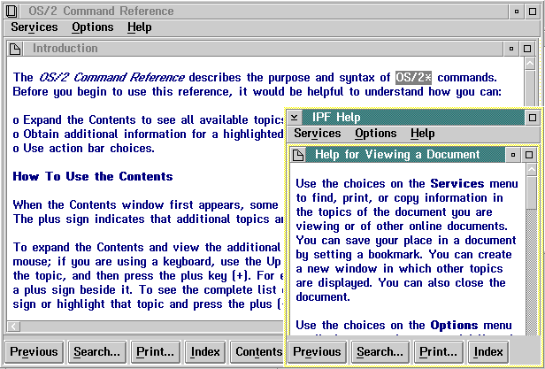

When a user requests help from a window, IPF displays the main help window, the characteristics of which are:
The main help window cannot be minimized.
Within the main help window is the help-text window. The help-text window contains the response to the user's request for help. The characteristics of this window are:
The windows shown in the lower right corner of the following figure are main help and help-text windows.

An IPF Main Help Window with its Help-Text Window. The title "Help for Viewing a Document" that appears in the title bar was created by the author of the help-text window.
When the main help window is first opened, its position is such that it covers the smallest part of the online document or application window as possible. The help-text window is opened at its maximum size within the main help window.
However, when the main help window is opened, it can be moved and resized, as can the help-text window. If the user makes the help-text window larger or smaller, the text within the window is reformatted to fit the new window size.